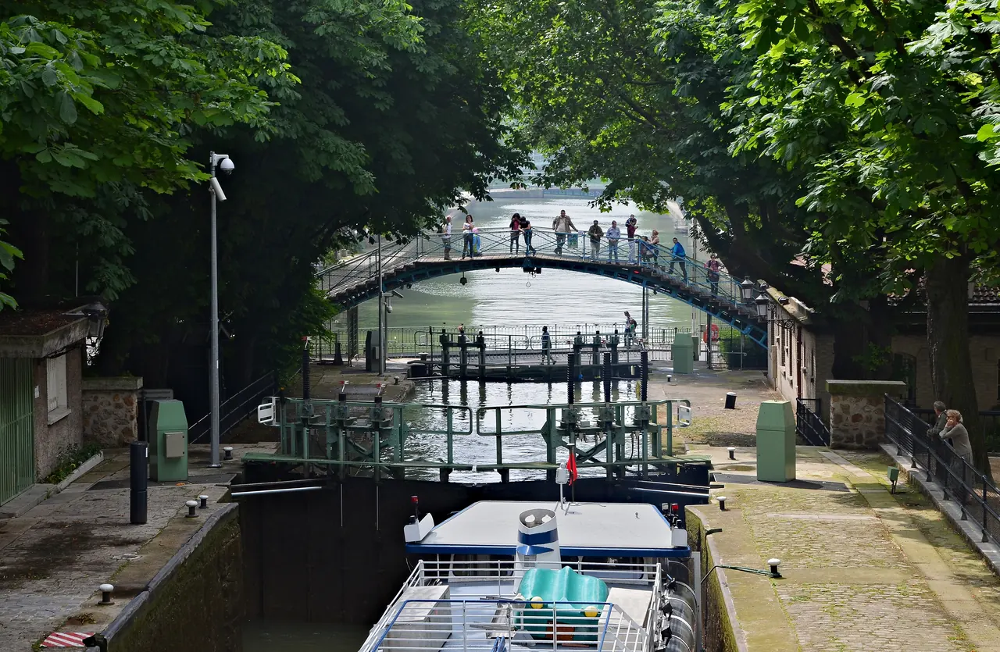
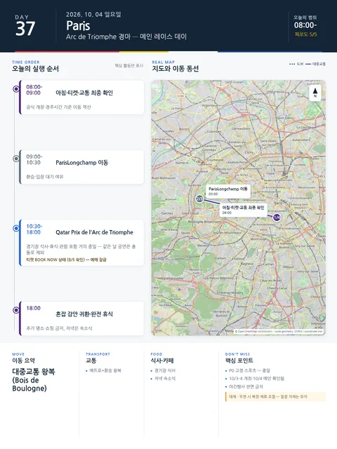

Day 37 · 10/4 일 · Paris

- 핵심 실행
- Qatar Prix de l'Arc 메인 레이스
- 권장 출발
- 개장 기준 역산
- 완충
- 종일 경기장 체류
시간표
| 시간 | 일정 | 실행 포인트 |
|---|---|---|
| 08:00–09:00 | 아침·날씨·티켓·교통 최종 확인 | 공식 개장·경주시간에 맞춰 이동 역산 |
| 09:00–10:30 전후 | ParisLongchamp 이동 | 환승·입장 대기 여유 |
| 오전–오후 | Qatar Prix de l’Arc de Triomphe 메인 레이스 데이 | 경기장 식사·휴식·관람을 포함한 거의 종일 일정 |
| 종료 후 | 혼잡을 감안해 숙소 귀환 | 추가 명소·쇼핑 금지 |
| 저녁 | 숙소식·완전 휴식 | 오페라·식당 예약·야간행사 없음 |
피로도
5/5
이 날의 메모
Qatar Prix de l’Arc de Triomphe — 메인 레이스 데이 고정 스포츠
France Galop 공식 페이지에서 10/3–4 개최와 10/4 메인 레이스 데이, BOOK NOW 상태를 확인했다. 같은 날 14:30 Il Barbiere는 충돌로 제외한다.
상세 실행 확인
- 최고 리스크
- 혼잡·날씨
- 우선 삭제
- 추가 명소·쇼핑
- 대체안
- 복장·체류 조절
- 식사·휴식
- 경기장 식사
- 잠금 필요
- France Galop P0
Daily Action Map

실제 좌표와 OpenStreetMap을 사용한 실행용 요약입니다. 도로·대중교통 상황은 출발 직전에 다시 확인하세요.